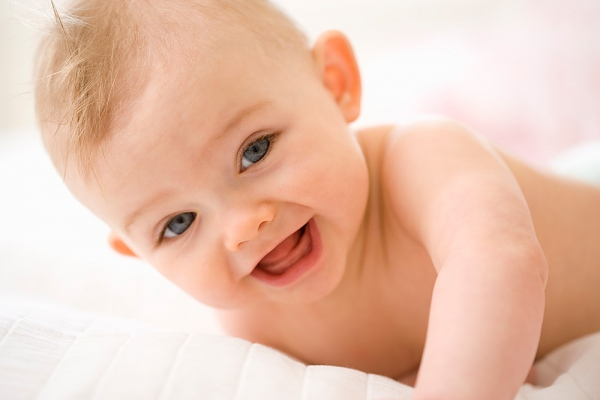

В 6 месяцев малыша начинают знакомить с новой пищей - предлагают первый прикорм. Ребенок интенсивно общается с близкими, лепечет, начинает разнообразно манипулировать с игрушками.
В 6 месяцев ребенок обычно умеет переворачиваться со спины на бок, со спины на живот, с живота на спину. 6-месячный малыш активно готовится к ползанию: не поднимая живота, подползает вперед, отползает назад, крутится, долго лежит на животе с опорой на ладони выпрямленных рук. Развитие ребенка 6 месяцев позволяет ему немного стоять на выпрямленных ногах при поддержке за обе руки или под мышки и недолго сидеть при поддержке за две или за одну руку. Ребенок 6 месяцев часто делает попытки согнуться вперед из положения лежа на спине. Тянет обе руки к маме - выражает желание, чтобы взяли на руки.